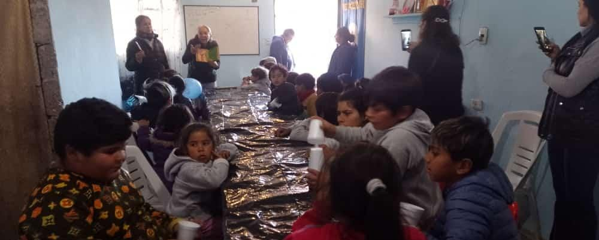

Hambre Cero
Promoviendo el desarrollo humano integral
Para Corazones Llenos el desarrollo humano se concibe desde una perspectiva integral, teniendo presente a toda la persona, y conlleva el respeto, protección y garantía de los derechos humanos. Ese enfoque del desarrollo humano exige fortalecer los derechos económicos, sociales y culturales para alcanzar la sostenibilidad de los procesos de desarrollo y así garantizar las libertades básicas.
Centrados en las personas
El objetivo del proyecto de desarrollo “hambre cero” es la consecución de los derechos de las personas, creemos en un mundo donde cada niño cuente con una nutrición adecuada para desarrollarse sanamente y también nos dirigimos hacia el sector de la población vulnerable donde tampoco pueden acceder a solventar una alimentación sana, ya que éstas obstaculizan el desarrollo. Para Corazones Llenos es fundamental trabajar con la población más vulnerable, ya que tienen mayores dificultades para ejercer sus derechos. El proyecto se llevará a cabo por equipos de voluntarios y profesionales que viven y trabajan diariamente en los alrededores de la provincia de Buenos Aires, mediante actividades que realizamos para recaudar fondos y las donaciones que recibimos.
